AVATAR REVIEW · 171Tops and bottoms
Mix four bottom shapes and eight colors with the existing tops. New masculine T-shirt and open shirt join the wardrobe. The 170 bodies, heads, hair and four eye shapes stay intact.
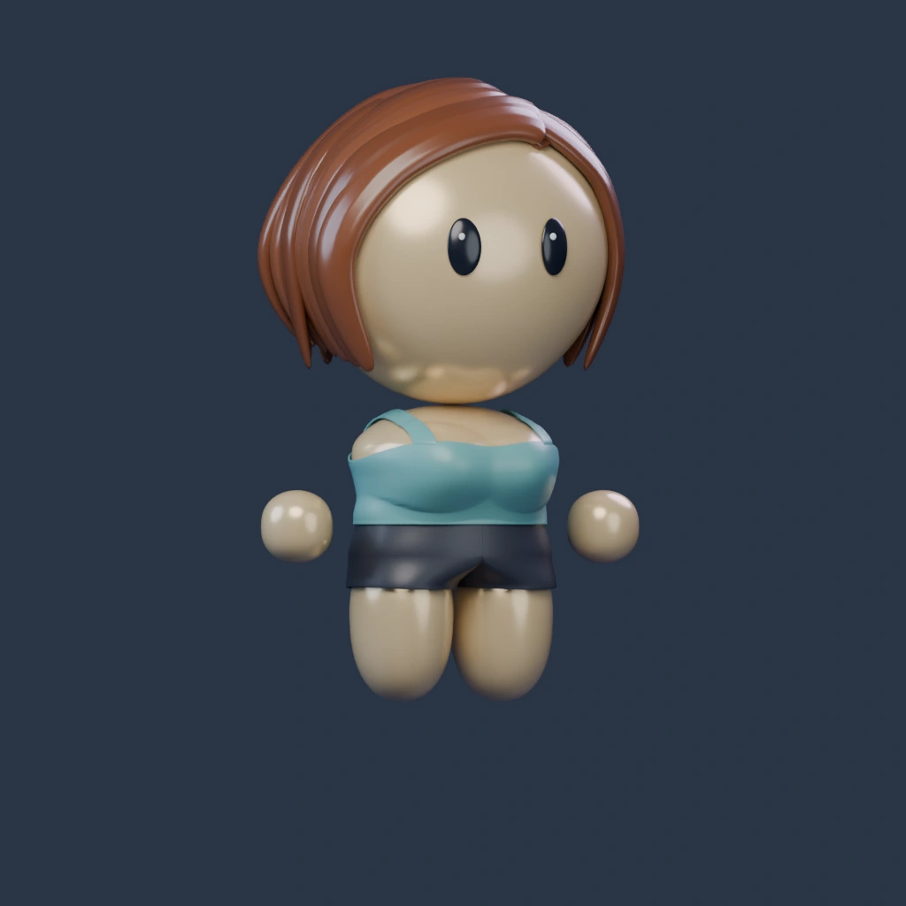
Blender reference · Tank / Charcoal / Light warmRendered bottom reference. Load 3D or change a selection to mix outfits and rotate. Your selections are remembered on this browser.
Native Cycles lighting and the two interactive lighting choices are unchanged from 170. Static bottom references use Tank, Original eyes, Light warm skin and Charcoal fabric. Live 3D shows your selected combination.
Four bottom shapes
Feminine
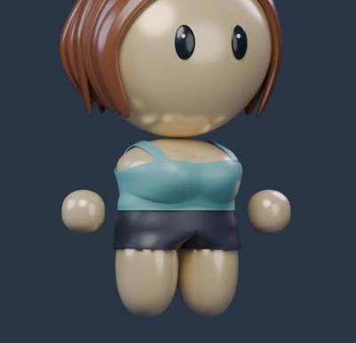
Short shorts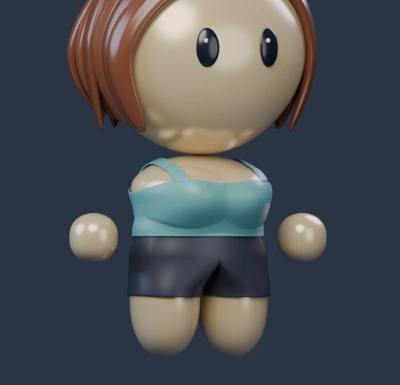
Shorts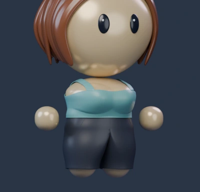
Trousers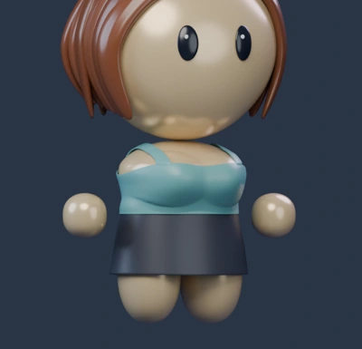
SkirtMasculine
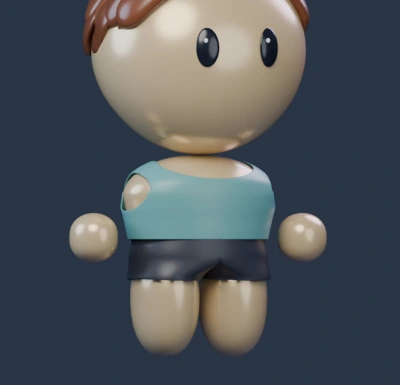
Short shorts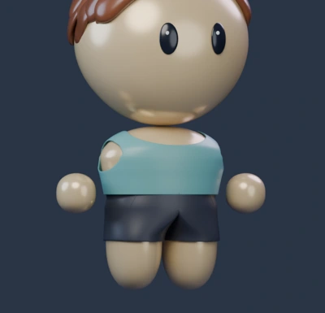
Shorts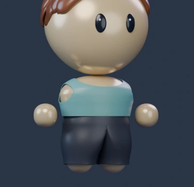
Trousers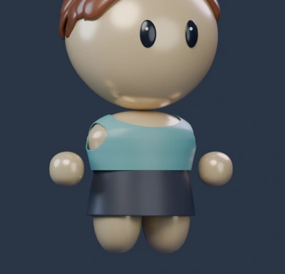
SkirtNew masculine tops
A simple crew-neck T-shirt and an open collared shirt with a fitted inner layer. Sleeve openings keep a clear gap above the floating hands.
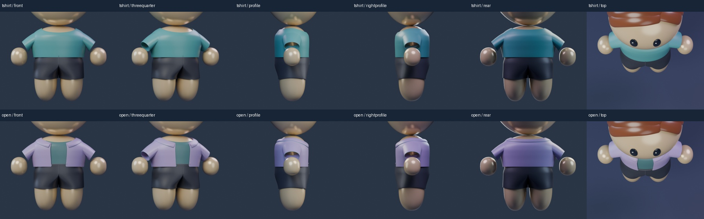
Bottoms · front, three-quarter, both sides, back and top
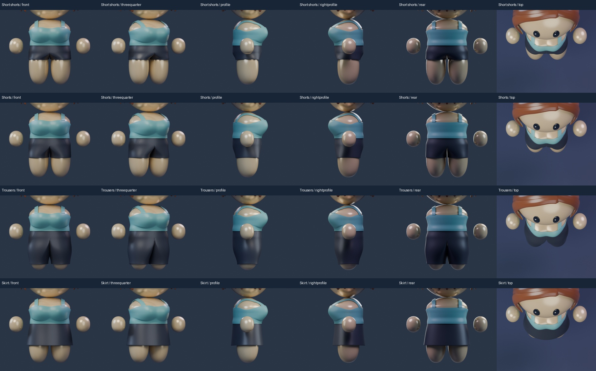
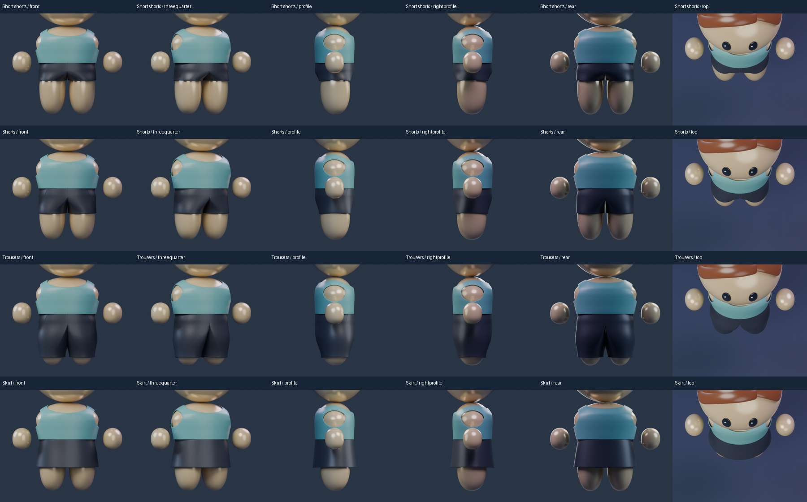
Every top and bottom · front, side and back
52 combinations. These lower-resolution native fit renders retain the actual geometry and materials; the individual candidates above have full-quality 1024px references.
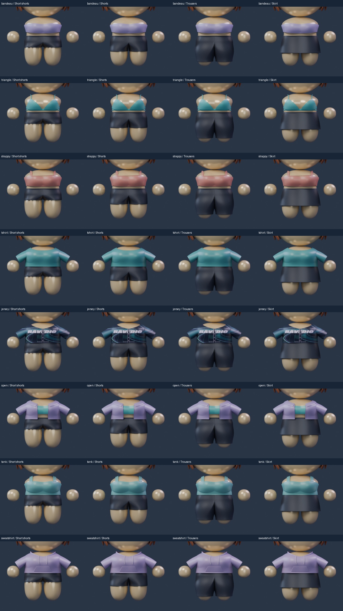
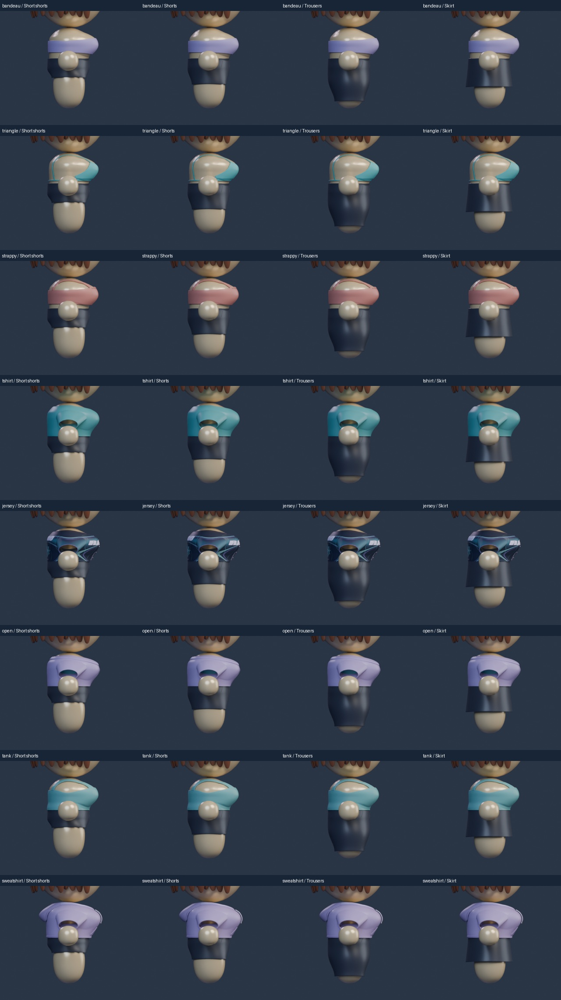
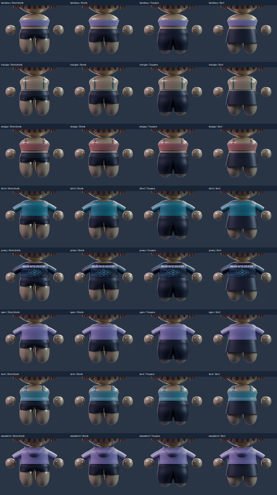
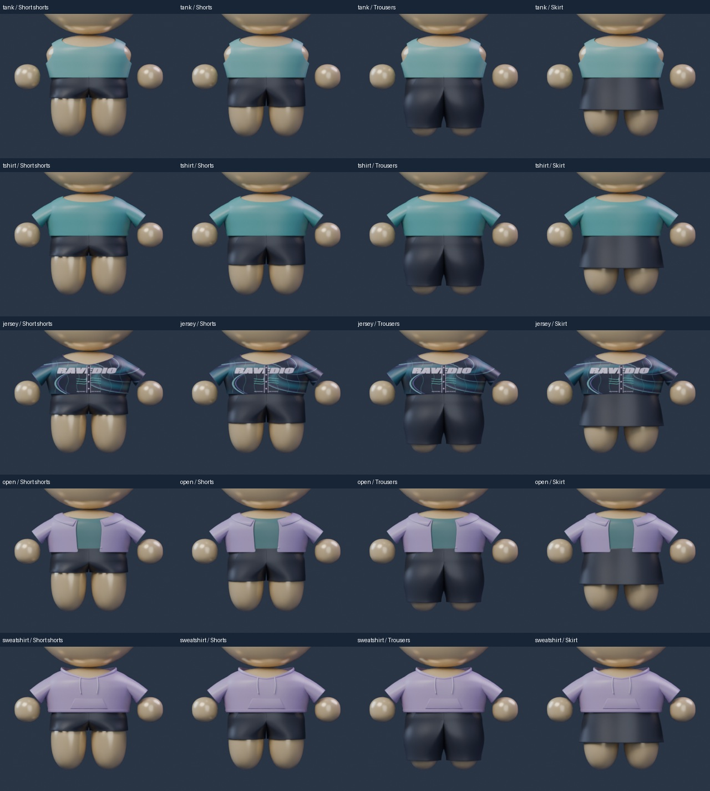
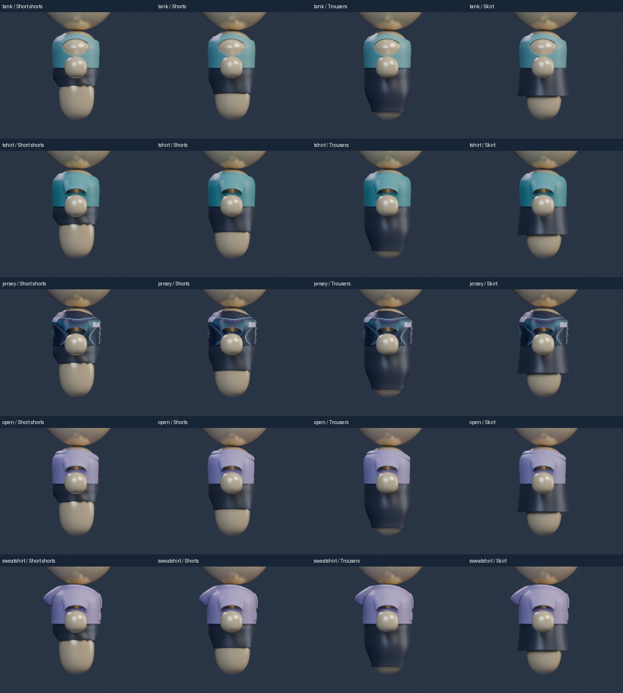
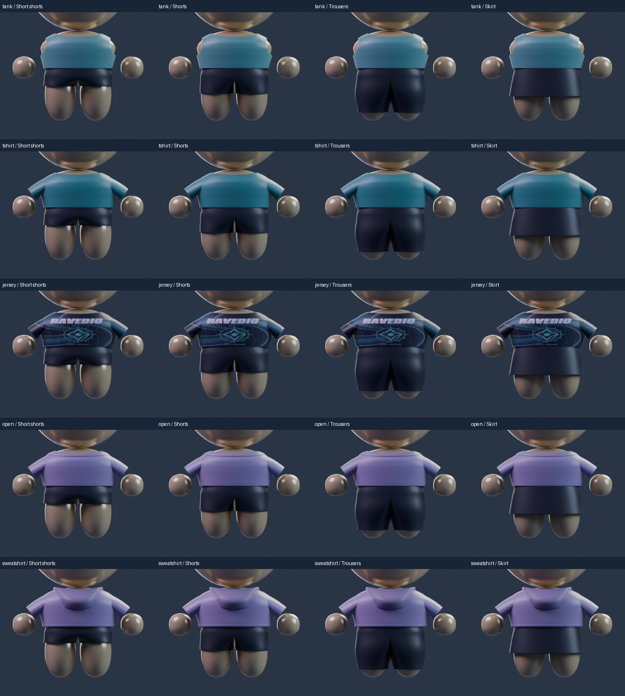
Review scope and asset files
170 heads, eyes, hair, body shapes, hands, legs and skin materials are preserved. Bottoms are separate modules; the old fixed shorts are removed from the preview base. All four shapes share a fitted waist interface. Skirt includes a contained opaque shorts underlayer. New options are local art candidates; display order does not assign protocol IDs.
Two visual stages, saved/reopened candidates, protected geometry checks, six-angle individual renders and all 52 combinations reviewed. Browser responsiveness is checked; physical-phone performance and the full hairstyle/accessory catalogue remain separate. Human master and Avatar Studio remain unchanged. No firmware, mobile, cloud or profile-byte implementation changes.
Construction references: Open collar shirt and Shorts front and back. Used for seams and garment construction; character proportions follow170.